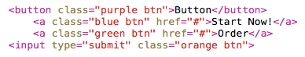

Next, this guide will show you how to create some kinds of buttons using the SASS preprocessor. To start things off, your file structure should look like something like this:
project/
index.html
css/style.css
scss/style1.scss
scss/style2.scss
As seen above, many “style.scss” files can compile into “style.css”, which is the only file that needs to be linked to your HTML. So let’s create some buttons using a fairly complex structure built upon SASS preprocessor language. In order to do this, let's use some of the features you already learned in the previous page of this guide:
Import File:
@import "compass/scss"
body
background-color: #DADADA
Color Themes (Variables):
$purple: #9A68C7
$blue: #3BA9E4
$green: #75B343
$orange: #FF6A42
Common Colors (Variables):
$off-wht: rgba(white,.4)
Mixins:
@mixin btn-theme($btn-color)
border-color: darken($btn-color, 20%)
background-color: $btn-color
&:hover
background-color: darken
($btn-color, 6%)
box-shadow: 0 .125em $off-wht,
inset 0 .063em $off-wht,
inset 0 -.188em lighten
($btn-color, 2%)
&:active
box-shadow: 0 .063em $off-wht,
inset 0 0 1.094em
darken($btn-color, 40%),
inset 0 .063em darken
($btn-color, 20%),
inset 0 -0.188em darken
($btn-color, 20%)
@mixin trans($val...)
-webkit-transition: $val
-moz-transition: $val
-o-transition: $val
transition: $val ;
Button Global:
.btn
display: inline-block
margin: 1rem
padding: .938em 1.875em
border: .094em solid
border-radius: .625em
box-shadow: 0 .375em .313em
-.313em rgba(black,.8),
inset 0 .063em $off-wht,
inset 0 -.188em rgba(black,.15)
color: #FFF
font: bold 1.8rem sans-serif
@include trans(0.2s ease-in-out)
text:
transform: uppercase
decoration: none
shadow: 0 .063em rgba(black,.3)
cursor:pointer
Themes:
.purple
@include btn-theme($purple)
.blue
@include btn-theme($blue)
.green
@include btn-theme($green)
.orange
@include btn-theme($orange) ;
You can call this structure from your HTML using this code:
